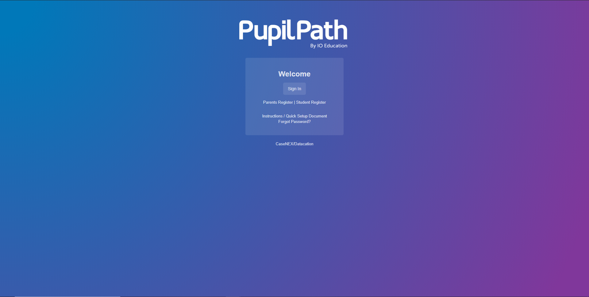
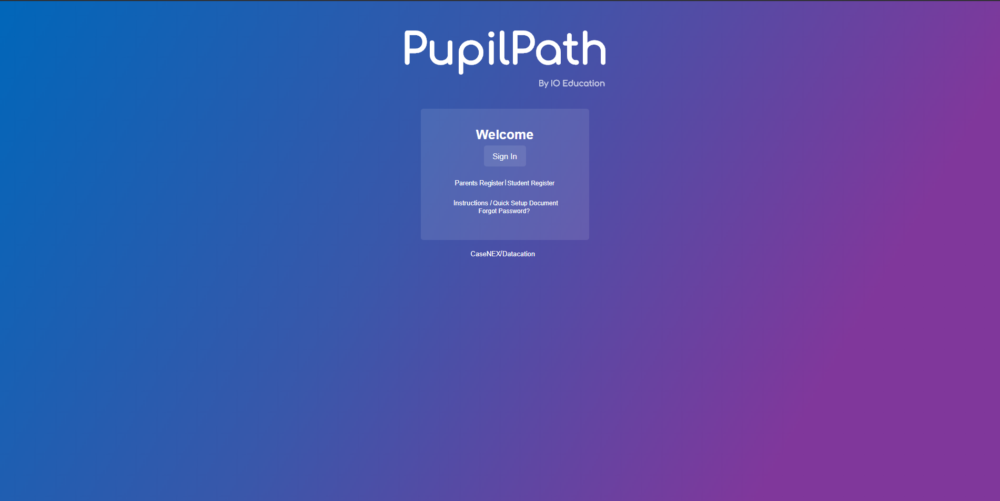

The project I am doing is called CopyCat Website. How this project works is I am going to choose a website cover that I am interest to code. So I have chosen to code the Pupilpath cover. The purpose of doing this project is to try to gather all the informations we have learned in CSS and HTML during the past few weeks and code myself. During the process of coding I have gained many skills such as time management which I am able to finish work on time. Problem decomposition, I am able to break my project into pieces so it’s easier for me to code. Also, Loyo where I am able to learn by myself by finding outside informations from google and watching youtube tutorials.
Overall, the project is pretty successful but there are also some obstacles. For example, when I set both text and the box color to white, the text inside the box will be covered since they have the same color even though I put an opacity for the box. An opacity is when you make the object more invisible. In addition, to overcome the challenge I have asked my classmate for help and she had research that I should put “rgba” color instead of just the plain word “white” for the background color of the box. Next time, I would try to improve my project by uploading image for the word “Pupilpath” since I would not be able to find the same font like the original Pupilpath cover. I would also like to add some cool colors or actions for the text.
My Copycat PlanOriginal
Copycat
